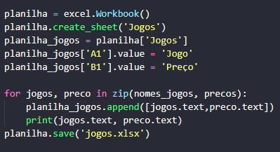

Web
Scraping
Automatização Eficiente com Selenium: Um Programa de Web Scraping
Você já imaginou automatizar a coleta de dados de páginas da web de maneira eficiente e precisa? Com o nosso programa desenvolvido usando Selenium, isso se torna possível.
O Selenium é uma ferramenta poderosa e versátil amplamente utilizada para automação de testes em aplicações web, mas suas capacidades vão muito além disso. Com seu robusto suporte para navegadores como Chrome, Firefox e outros, ele permite simular interações humanas em páginas web de forma programática.
Nosso programa de web scraping desenvolvido em Python utiliza Selenium para navegar por sites, interagir com elementos como botões e formulários, e extrair informações estruturadas diretamente do HTML. Isso inclui coleta de dados como texto, links, imagens, e qualquer outro conteúdo relevante disponível na web.
Além disso, ele ainda armazena todos os dados obtidos em um a tabela do excel, utilizando as bibliotecas Openpyxl e Pandas
Benefícios do Programa
- Precisão e Confiabilidade: O Selenium garante uma interação precisa com o conteúdo da web, minimizando erros comuns de scraping.
- Escalabilidade: Capaz de lidar com grandes volumes de dados e múltiplas fontes sem comprometer o desempenho.
- Personalização: Adaptável para diferentes necessidades de scraping, desde simples coletas até tarefas mais complexas de automação.
Como Funciona
- Configuração do Ambiente: Utiliza Selenium para inicializar o navegador especificado (por exemplo, Chrome) e abrir a página alvo, que nesse exemplo foi a https://www.r10gamer.com.br/.
- Interagindo com Elementos: Identifica e interage com botões, formulários e outros elementos necessários para navegar e extrair dados da página.
- Extração de Dados e Criação de Tabela: Implementa lógicas para extrair dados estruturados do HTML da página, como informações de produtos, preços, avaliações, etc e organizá-los em uma tabela excel.
- Interface: A interface do programa foi feita usando a biblioteca 'Tkinter'.
- Tabela final com os dados.


Ao clicar no botão "Coletar Dados", o programa inciar a varredura.
Se não quiser que o processo varra todos os elemnto, é só clicar em "Encerrar Coleta". Assim, o programa irá encerrar e abrirá uma janela do explorador de arquivos para que você possa escolher onde e como quer salvar a tabela.
Aplicações Potenciais
- Monitoramento de Preços: Automatiza a coleta de preços de produtos em sites de comércio eletrônico.
- Agregação de Dados: Cria bases de dados consolidadas a partir de múltiplas fontes na web.
- Análise Competitiva: Obtém insights sobre estratégias de mercado através da análise de conteúdo de concorrentes.
Download
Aqui disponibilizamos o programa para download para que você posta testá-lo e avaliá-lo.
Download Web ScrapingTutorial de instalação
- Clique no botão de download acima. Você será redirecionado para outra página onde basta clicar em "Fazer download mesmo assim". Nosso programa é seguro.
- Abra o arquivo zip. Você verá esta janela:
Entre na pasta.
Clique no arquivo "Web-Scraping.exe" e o programa iniciará.